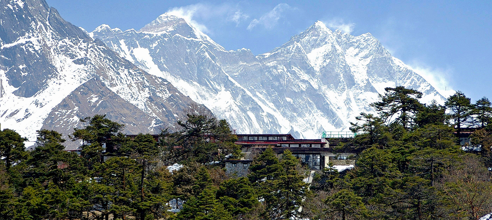
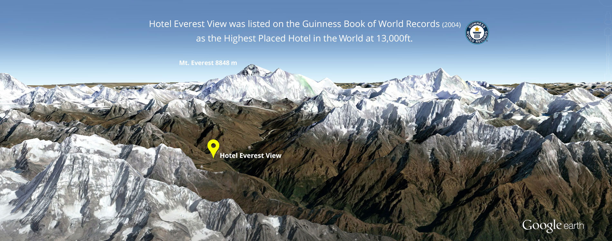
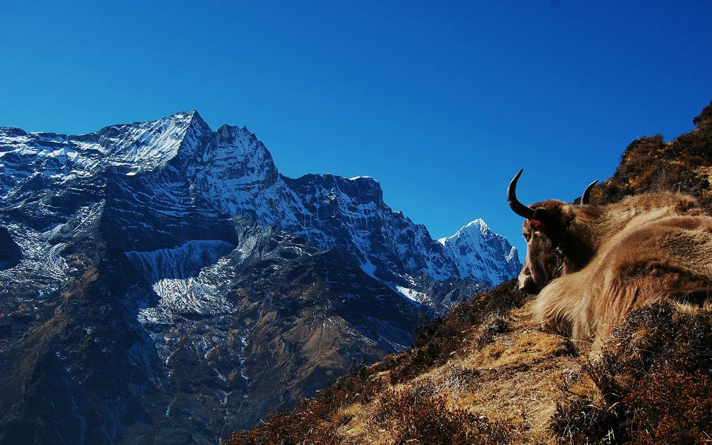
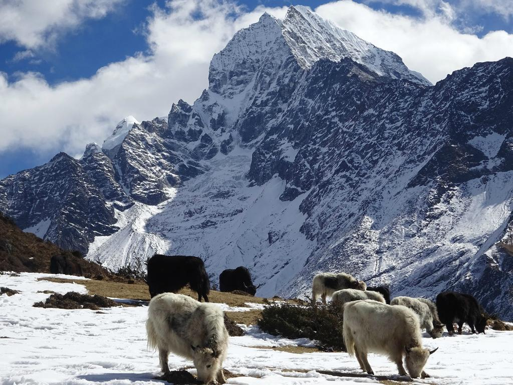

View from Everest view
View from Everest view
 View from Everest view
View from Everest viewView from Everest view
View from Everest view
Mount Everest has been conquered. E.P. Hillary, a New Zealand member of the ninth expedition, reached the summit at 29,002 feet with the Sherpa Tenzing on Friday [May 29].
News of the successful assault was given to the Queen at Buckingham Palace last night. It was first made public by United States radio stations shortly before midnight, and was confirmed in New Delhi in a message from Colonel Hunt, the leader of the expedition. It had previously been arranged that the British Embassy in Katmandu, Nepal, should inform the Queen directly if the expedition succeeded - if possible by the day of her Coronation.
Colonel John Hunt, a serving officer of the King's Royal Rifle Corps, led the British team of thirteen. It was the eleventh assault on Mount Everest and the ninth by a British expedition. Twelve months almost to the day before the successful British climb Tensing, with the Swiss mountaineer Lambert had reached 28,200 feet, only 800 feet from the summit.
The expedition carrying three flags - the Union Jack, the United Nations flag of a white globe on a blue background, and the Nepalese flag - to plant on the summit, made its approach by way of the South Col from the south or Nepalese side. It was first reconoitred by Eric Shipton, who led the British expedition in 1951 and it was the approach by which the Swiss so nearly succeeded last year. All previous parties had started from the Tibetan side which has been closed to mountaineers since the Chinese Communists moved in.
Everest, to its immediate south, is guarded by the treacherous glaciers and ice-falls of the Western Cwm. It forms a huge punch-bowl between Everest itself and Lhotse (27,890 feet), to the south-east, and Nuptse (25,680) to the south-west. The South Col is high above the Western Cwm, between Lhotse and main mass of Everest. To reach it the party traversed stretches of dangerous ice and "bad" snow, under which crevasses are liable to open up suddenly into chasms of great depth. On their way up these massifs of ice, rock and snow the Hunt party carried a new kind of mortar to dislodge loose snow which might start avalanches in their path. In this as in other respects the party were better equipped for reaching the summit than any of their predecessors.
With 362 porters, twenty Sherpa guides and 10,000lb of baggage the party set out from the Nepalese base at Katmandu on March 10 and trekked 170 miles to their headquarters at Nanche Bazar. They arrived on March 25. Then came a period of training and trying out the equipment. Nanche Bazar lies at 13,--- feet and the party made trial climbs up to 19,000 feet.
The next stage was a 20 mile advance to camp one, the base camp. 18,000 feet up on the Khumbu glacier. Camp two was pitched below the ice fall at the head of it and Camp Three just above the ice fall. But cam three was too exposed and tha party pushed on to the great hollow of the Western Cwm, where the advance base camp - camp four - was established at 23,000 feet. Camp five was a stores depot at the head of the Western Cwm, at the foot of the Lhotse face.
Colonel Hunt established camp six on the South Col, within four thousand feet of the top. Camp seven set up at the highest possible point for the final assault by two men at about 26,000feet. Camp eight, the last, was being set up on the South Col at 27,500 feet - 1,500 feet from the top. It was to be a bivouac camp from which the picked pair of climbers would cover the last gruelling stretch.
The party planned, if they reached the summit, to look for traces of Mallory and Irvine who vanished near the top thirty years ago. It has never been known whether they ever conquered the mountain or fell to their deaths before they reached the summit.
The key to Everest was the special oxygen equipment, without which no expedition ever tried to climb the last few thousand feet against severe winds in rarefied air. Colonel Hunt's party took an improved type of equipment of two kinds - a closed circuit system by which the climber receives 100 per cent oxygen form the cylinder, and an open circuit in which a certain proportion of fresh air is absorbed as well as pure oxygen. The difficulty in the past was the weight of this necessary outfit, carried on the back at the higher altitudes.
The British party wore special clothing including an outer suit of cotton windproof material, a smock with protective hood and trousers double-lined with nylon, two feather-weight jerseys and one heavy pullover, a special type of climbing boot with no nails, close-fitting silk gloves, and an outer gauntlet of windproof cotton.
Mr E. P. Hillary, aged 34, is a beekeeper in New Zealand. He served in the Royal New Zealand Air Force during the war. He started climbing in the New Zealand Alps and was an originator of winter ski mountaineering in the country.
Colonel Hunt is on his first expedition to the "Goddess Mother of the Snows" (the translation of the Tibetan name for the mountain, Chomolungha). He has however, had wide experience in the Himalayas and in 1935 he was in an expedition in the Katakoram range, which reached 24,500 feet.
Tenzing, aged 39, the leader of the Sherpa guides - members of a caste of mountain dwellers on the southern slopes of the Himalayas - has taken part in more attempts on Everest than any other man - Reuter.
View from Everest view